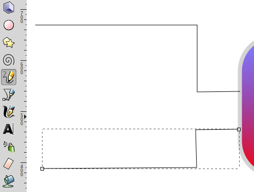
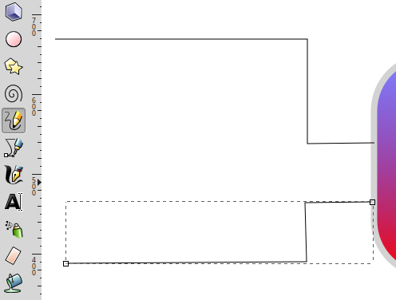

Vorsicht
Dies ist die Dokumentation des aktuellen Entwicklungszweigs der CometVisu. Es besteht daher die Möglichkeit, dass einige der hier beschriebenen Features mit dem aktuellsten Release der CometVisu nicht genutzt werden können.
Anleitung zum Erstellen eines Animierten Hydraulikplans¶
Voraussetzung¶
- Inkscape
Wir erstellen einen Puffer¶
- Inkscape Starten
- Rechteck erstellen
- Füllen und Kontur auswählen

- Farbe der Kontur auf Grau stellen

- Breite der Kontur einstellen

- Ergebnis
- Füllung mit Farbverlauf erstellen

- Mit der Bearbeitungsfunktion zwei Farben für den Verlauf zuweisen
- Farbe 1 (rot) Zuweisen mit 100% Deckung
- Farbe zwei (blau) mit 50% Deckung
- Farbverlauf ändern
- es gibt zwei Möglichkeiten
- Objekt drehen
- es gibt zwei Möglichkeiten

- Farbverlauflinie verschieben

- Ecken abrunden
Wir erstellen Leitungen¶
Rohre werden mit dem Freihandlinien Zeichner erstellt. Es ist damit möglich auch gerade Linien zu Zeichnen Am Startpunkt mit der Maus klicken. Am Zielpunk wider klicken, fertig ist die Gerade. Wenn man mit der neuen Linie am letzten Kästchen der alte Linie beginnt werden die Linien zusammenhängen. Die Zeichenrichtung bestimmt wie später die Animation läuft. Von rechts nach links gezeichnet, Flüssigkeit fließt von rechts nach links.
 

- Linie ein Volumen geben
- Füllung der Kontur
- Muster der Kontur
- Füllung der Kontur
- Farbe der Kontur


- Dem Objekt einen Namen zuweisen. Wird später für die Animation
benötigt.
- Linie mit der rechten Maustaste anklicken
- Objekteigenschaften wählen
- Linie mit der rechten Maustaste anklicken

- ID ändern
XML-File anpassen (Inkscape)¶
Nun kommt das Geheimnis der animierten Leitungen
- Gruppen Bilden
Die benötigte Werte können nur eingetragen werden, wenn die Leitung als Gruppe definiert wurde.

- Parameter der Gruppe zuordnen
- id=“<eindeutige id>“
- class=“pipe_group show_flow flow_control“
- data-cometvisu-active=“1/0/3“
Die Parameter pipe_group, show_flow, data-cometvisu-active und flow_control bedeuten:
- pipe_group => aus dem Pfad wird eine Röhrenform erzeugt
- show_flow => wird eine fliesende (abstraktes) Fluid „simuliert“.
- data-cometvisu-active=“<ga>“ => animiert die Flüssigkeit bei aktiver GA
- flow_control => Animation
XML-File anpassen (Editor)¶
Es ist auch möglich die SVG Datei direkt per Editor zu bearbeiten. Basis ist die Leitung als Gruppe eingefasst
- Mit einem Editor die svg Datei öffnen und nach dem Kenner (blaues Rohr) suchen
- den Abschnitt mit dem folgendem Code anreichern.
<g
id="<eindeutige id>"
class="pipe_group show_flow flow_control"
data-cometvisu-active="1/0/3">
<path />
</g>
Das Fertige Ergebnis im Webbrowser¶